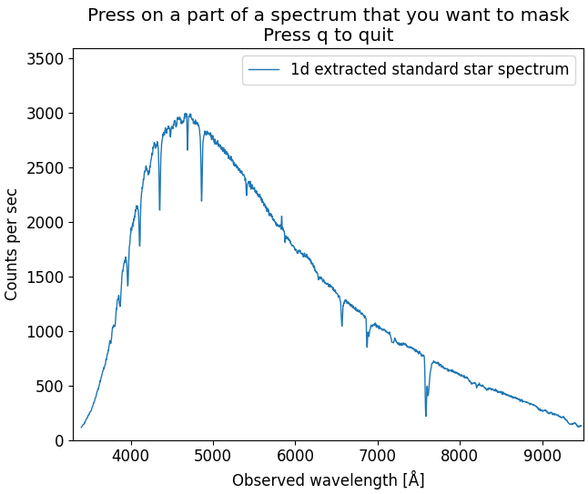
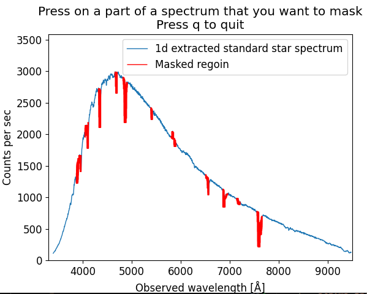

Standard¶
In this step, the flux from the extracted 1d standard star spectrum, that at this point is still in ADU (analog to digital detector units), will be correlated with an archived spectrum from the same star that is given in wanted physical flux units. This allows to estimate detector sensitivity, and later calibrate the science spectrum to physical flux units.
In simpler and more loose terms - we want to go from detector counts to energy.
The script used for this step is standard.py. The naming of the archived spectrum should be: “m” + starname + “.dat”. For this tutorial, the file “mfeige110.dat” is provided (as the observed standard star for the tutorial dataset is Feige 110). This file has been downloaded from the ALFOSC homepage. The extracted 1d standard star spectrum will be read from the file std.ms_1d.dat. The setup.py file is also needed.
IMPORTANT: It is crucial that you consider the units of the “m” + starname + “.dat” file. As it comes, the standard.py script assumes the units of AB magnitude. Change the definition of the flam parameter in the script if the unit conversion is different (see the comments inside the script).
The relevant files and directories for this step are:
├── arcsub.fits
├── arcsub_std.fits
├── mfeige110.dat
├── setup.py
├── standard.py
├── std.fits
├── std.ms_1d.dat
Only manual interaction from the user needed is manual masking of what parts of the extracted spectrum should be omitted. Anything that would interrupt later fitting process should be masked - this includes visible emission/absorption lines, and other artifacts.
First, while in the same directory as the standard.py script, run:
python3 standard.py
This will open an interactive plot window, where you can mask the spectrum parts by clicking on the plot. The masked parts will colored. An example of the plot before and after masking is shown below:
 {kind=link}
{kind=link}
When the wanted parts are masked, press “q” and the script will do the rest automatically, and lastly produce the output files. The file structure after execution should now be:
├── arcsub.fits
├── arcsub_std.fits
├── database
│ ├── stddata
│ └── stdinfo
├── mfeige110.dat
├── setup.py
├── standard.py
├── std.fits
├── std.ms_1d.dat